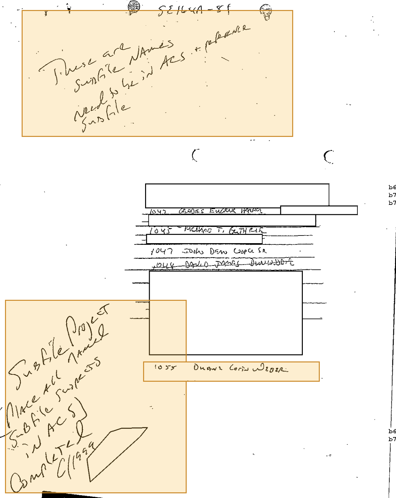
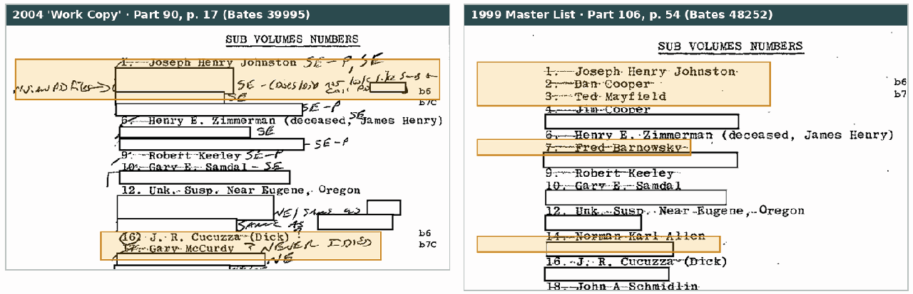
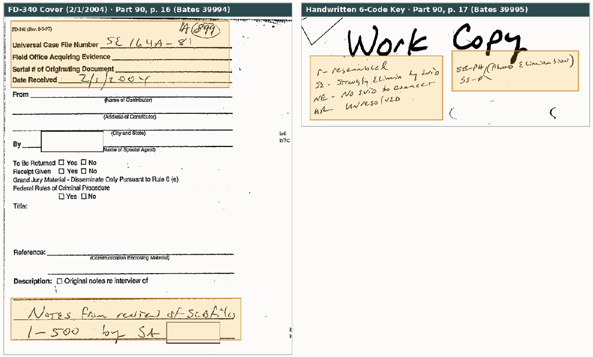
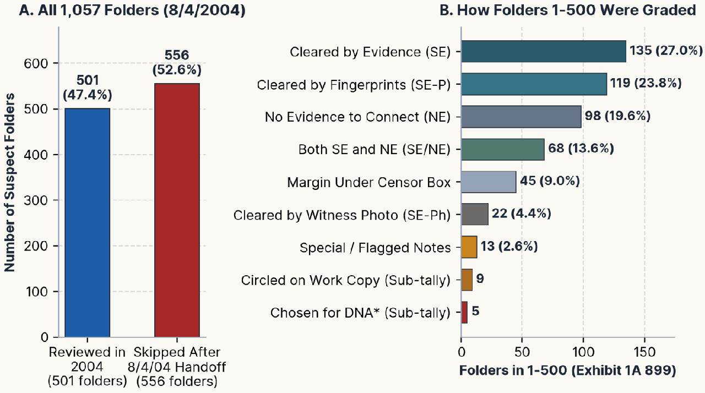
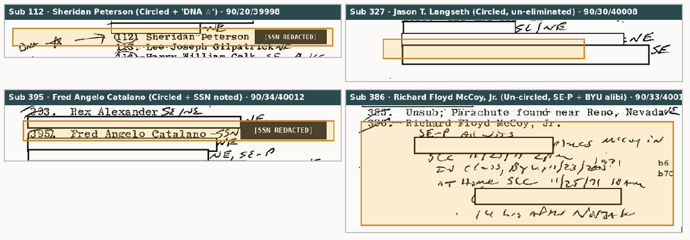
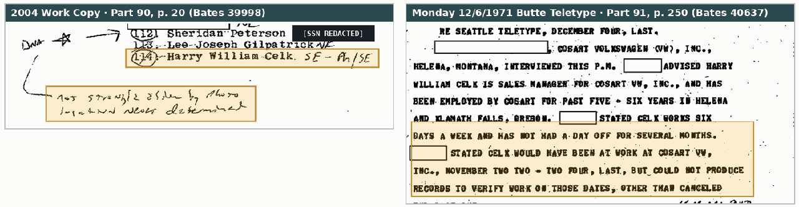
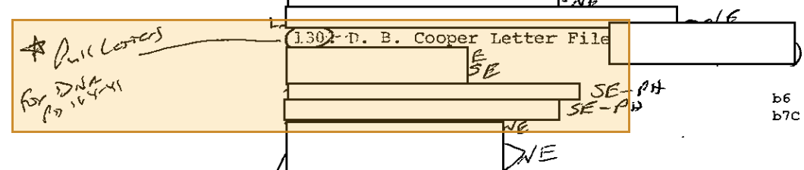
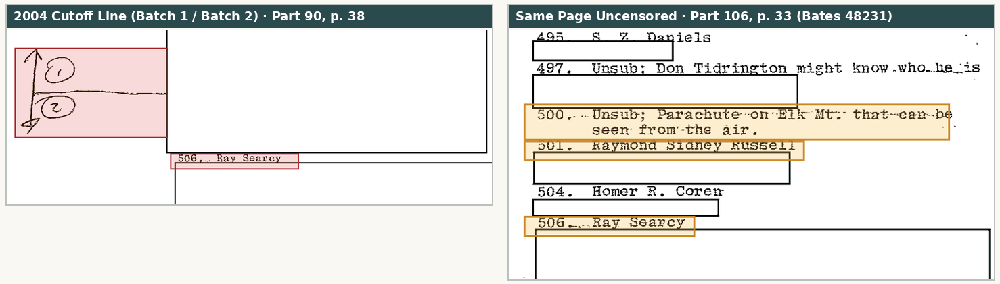
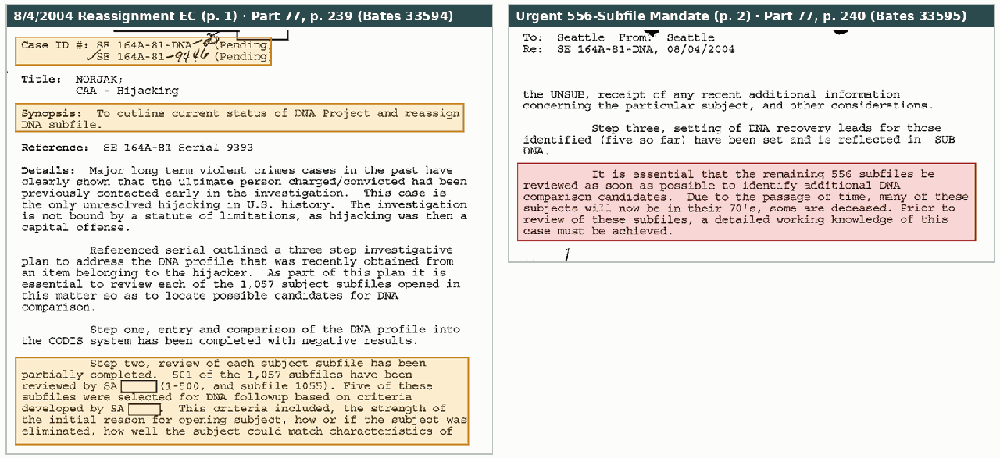
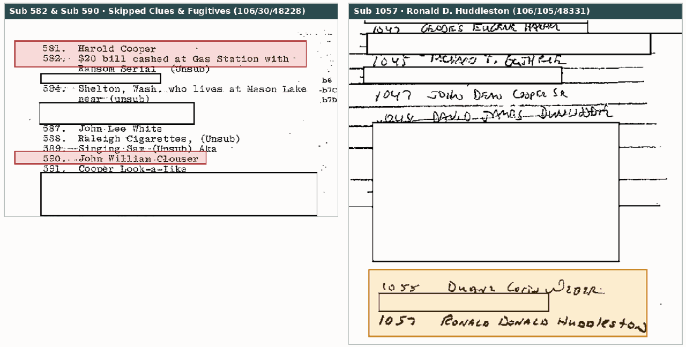

500 Down, 556 to Go: DNA Deep Dive Part 2 of 2
Inside Seattle's 2004 "Work Copy" Suspect Audit (1A 899) and the Unredacted 1999 Subfile Roster
After DNA pulled from D.B. Cooper's black clip-on tie failed to match anyone in the FBI's national offender database, a Seattle Special Agent printed out the first 22 pages of Seattle's master suspect list in early 2004, wrote "Work Copy" across the top, graded folders 1 through 500 by hand, and drew a line under #500. Six months later, that agent handed the DNA project to a colleague with written instructions to review the remaining 556 folders "as soon as possible." As far as the released FBI files show, that second half was never done.
501 folders graded, five men picked for DNA, and 556 folders dropped in a 2004 handoff
Here is the plain-English summary of what happened when the Seattle FBI tried to pick historical D.B. Cooper suspects for DNA testing. Every point is backed up in Sections 2–7 with original FBI page crops and clickable Part / PDF page / Bates links to the FBI Vault.
-
What a "subfile" is—and how matching two FBI copies unlocks 212 names (§2). Starting in November 1971, whenever a tip came in about a possible suspect or physical clue, the Seattle FBI opened a numbered mini-folder—called a subfile—starting at
#1and eventually reaching#1,057by late 1998 (106/54, 108/48252, 48372). In early 2004, a Seattle agent graded folders1–500by hand on a 22-page printout (90/16–38/39994–40016). Although FBI censors blacked out most of the names on that 2004 printout, a second copy of the same typed list survives in 106/16–54/48214–48252—reviewed by a different censor who left far more names uncovered. Lining the two copies up side by side restores 212 of the 514 folder titles (41.2%) without any guesswork. -
How the agent graded the first 500 folders (§3). Using a six-part shorthand key written at the top of Page 1 (90/17/39995), the agent recorded visible margin grades on 455 of the first 500 folders (45 right-hand margins are hidden under wide censor boxes): 135 cleared by hard evidence like an alibi (
SE), 119 cleared by fingerprints (SE-P), 98 with no evidence tying the person to the hijacking (NE), 68 marked both cleared and lacking evidence (SE/NE), 22 cleared after Flight 305 witnesses looked at photos (SE-Ph), and 13 carrying special notes or flags. -
How 501 reviewed folders narrowed down to five DNA candidates (§4). Only three circled men on the list had never been cleared by prints, photos, or an alibi—
112. Sheridan Peterson,327. Jason T. Langseth, and395. Fred Angelo Catalano—and all three went onto Seattle's July 29, 2004 DNA collection memo (77/242–248/33598–33604). Seattle added two more names to reach five candidates from 501 reviewed folders (77/239/33594): famous 1972 copycat hijacker386. Richard Floyd McCoy, Jr.(added to put lingering rumors to rest even though the agent wrote out McCoy's Utah alibi on 90/33/40011) and1055. Duane Lorin Weber(whose personal items had already gone to the Lab in 2003, 77/170/33503). -
Why a fourth circled suspect—
114. Harry William Celk—was quietly dropped (§5). On 90/20/39998, the agent circled Harry William Celk and noted that witnesses had not strongly ruled him out by photo and his whereabouts on the day of the hijacking were never determined. That happened because Seattle's individual folder on Celk stopped at a weekend cliffhanger from December 4–5, 1971 (91/106–108, 113/40476–78, 40483). Deeper in the main files, Butte agents had visited the Helena, Montana car dealership where Celk worked on Monday, December 6, 1971, verified company checks Celk signed on November 22–24 (91/250–251/40637–38), and cleared his U.S. Coast Guard fingerprints days later (91/100, 270, 311, 348–349/40470, 40657, 40702, 40747–48). -
What the other five circles mean—including an unfulfilled note to test the Cooper letters (§6). The other five circled numbers were follow-up or housekeeping items rather than new suspects. Most notably, on folder
130. D. B. Cooper Letter File(90/21/39999), the agent drew a star and wrote "Pull Letters for DNA"—a plan to test licked stamps and envelope flaps from the 1971–1972 anonymous Cooper letters, with zero sign in the released files that it was ever carried out. The remaining four circles (16,69,280, and redacted312) involved men already cleared in 1971–1972. -
The dropped August 4, 2004 handoff—and who sits inside the 556 unreviewed folders (§7). After drawing a cutoff line right below folder
#500(90/38/40016), the outgoing agent transferred the DNA project to another agent on August 4, 2004 (77/239–240/33594–95), warning in plain terms that it was "essential that the remaining 556 subfiles be reviewed as soon as possible." The incoming agent seemingly never followed up [inference]: zero work copies or DNA requests from folders501–1,054or1,056–1,057appear anywhere in the file. While a few famous names in that skipped half—such as Robert Rackstraw (#933) and John List (#1011)—have long been ruled out as serious contenders by FBI and independent community research, skipping556folders also bypassed 201 unredacted names and clues (106/16–33, 105, 108/48214–31, 48331, 48372)—including early physical leads (#518LaCenter pay phone,#582ransom-serial$20bill), flight/skydiving leads (#514,#544Bradley Earl Ayers,#684Raleigh Harden), and 355 still-censored folders the public has never seen.
In August 2002, Seattle promised to review all 1,057 suspect folders opened in the D.B. Cooper case (77/239/33594). One agent did the hard work on the first half—grading 501 folders and selecting five men for DNA testing—before handing the file off on August 4, 2004 with urgent written orders to check the remaining 556 folders before elderly suspects died (77/240/33595). Based on the released file log, the agent who inherited the case never completed that review [inference]: once the outgoing agent's pending 2004 leads wrapped up in January 2005, Seattle tested only walk-in tips from the public while 556 historical suspect folders sat untouched until the active investigation closed in 2016.
What the typed list under the "Work Copy" really is—and why the names are crossed out
2.1 One Folder per Tip: How Seattle Reached 1,057 Subfiles
Because Northwest Orient Flight 305 was hijacked on its leg into Seattle on November 24, 1971, the Seattle FBI office ran the nationwide investigation under main case file SE 164-81 (later updated to SE 164A-81). Within days of the jump, tips began pouring in from across the country. To keep individual suspects separate from the main pile of teletypes, Seattle clerks opened numbered side folders—called subfiles—starting with 1. Joseph Henry Johnston, 2. Dan Cooper, 3. Ted Mayfield, and 4. Jim Cooper (106/54/48252), and continuing in rough chronological order through the 1970s, 1980s, and 1990s up to 1055. Duane Lorin Weber in February 1997 and 1057. Ronald Donald Huddleston in October 1998 (106/105, 108/48331, 48372).
Two everyday quirks of that filing system explain a lot of what looks odd on the list:
-
Not every numbered folder is a person. Especially in 1971–1976, Seattle assigned subfile numbers to physical clues, sightings, cars, and letter files right alongside named suspects—producing entries like
35. Airplane seen near Yacolt(106/53/48251),60. Illuminated Object; Benton Airport, Redding(90/18/39996),130. D. B. Cooper Letter File(90/21/39999),330. "Tie and Tie-Pin" See Sub 5(90/30/40008),500. Unsub; Parachute on Elk Mt.(106/33/48231), and858. UNSUB; Trousers found near Amboy, Wa 11/23/76(106/22/48220). -
Several post-2000 DNA suspects never got a
1–1,057number. Readers coming from Part 1 may wonder why Arthur Burge Derham, Barbara/Robert Dayton, William Pratt Gossett, and private-lab suspect"X"do not appear in the1–1,057roster. After Seattle created a dedicated-DNAsubfile in 2002, most new public tips were handled directly insideSE 164A-81-DNAor general main-file paperwork (52/84, 214/21697, 21885; 77/194, 299/33535, 33661), with only four late suspects receiving new numbered folders between 2006 and 2010 (Sub 1059Tahoe,Sub 1060Lyle Franklin,Sub 1061Kenneth Christiansen, andSub 1062Lynn Doyle Cooper at 77/265–298/33624–60).
2.2 Why Nearly Every Person's Name Has a Line Drawn Through It (106/16/48214)
Anyone looking at the 2004 Work Copy (90/17–38/39995–40016) immediately notices a horizontal pen line drawn straight through almost every visible person's name. It is tempting to assume the 2004 agent crossed off suspects as he eliminated them—but a second copy of the same typed roster preserved back-to-front in 106/16–54/48214–48252 proves those lines were already there five years earlier.
On the last sheet of the typed list (106/16/48214), handwritten instructions explain what the document originally was: "SE 164A-81 — These are Subfile Names — Need to be in ACS & reference Subfile" at the top, and "Subfile Project (Place all named Subfile subjects in ACS) — Completed 6/1999" at the bottom. In the late 1990s, the FBI transitioned from paper index cards to its computer database (ACS, Automated Case Support; verified by an August 16, 1999 computer printout at 106/107–108/48371–72). As a Seattle clerk typed each person's name into the computer in June 1999, the clerk drew a line through that name to mark it done—leaving non-person clues like 35. Airplane seen near Yacolt and 500. Unsub; Parachute on Elk Mt. un-crossed. In early 2004, the agent reviewing the case simply grabbed a photocopy of the first 22 pages of that 1999 check-off list and wrote his DNA review notes in the margins.

1055 Duane Lorin Weber).
2.3 Two Different Censors, One List: Restoring 212 of 514 Folder Names
When the FBI released its D.B. Cooper files to the public Vault in installments, privacy censors blacked out living third-party names—but two different censors handled Part 90 and Part 106 completely independently. On the 22 pages of the 2004 Work Copy in 90/17–38/39995–40016 (which hold folders 1 through 514), heavy censorship left only 79 folder titles readable. On the matching 22 pages of the clean 1999 list in 106/33–54/48231–48252, a second censor left 207 titles readable—while Part 90 left 5 entries uncovered that Part 106 blacked out (17. Gary McCurdy, 53. D. B. Cooper, 109. Unk person in Reno, Nevada Cab at Gas Station near Sacramento, 182. Unsub on Bus from Portland to Reno, Nv., and 330. "Tie and Tie-Pin" See Sub 5). Placing the two copies side by side restores 212 of the 514 folder titles (41.2%) word for word and connects every newly revealed name in Part 106 to its 2004 handwritten grade in Part 90.

17. Gary McCurdy, but blacks out folders 2–4, 7, and 14. Right: The 1999 copy (106/54/48252) reveals those exact lines as 2. Dan Cooper, 3. Ted Mayfield, 4. Jim Cooper, 7. Fred Barnowsky, and 14. Norman Karl Allen.
How one agent graded 500 folders—and what his six shorthand codes meant
3.1 The Three-Step DNA Plan and the February 2004 Working Sheets
Back in August 2002 (52/38–39/21641–42; duplicate at 77/188–189/33529–30), Seattle mapped out a three-step plan for the partial DNA profile recovered from Cooper's tie:
- Step One: Run the DNA profile against the national offender database (
CODIS) across all 50 states. - Step Two: Read through all
1,057suspect folders opened since 1971 to find viable men who had never been solidly ruled out. - Step Three: Send out field agents to collect cheek swabs or personal items from the best candidates.
Once the 50-state database search came back empty (77/239/33594), Step Two became the main event. On February 1, 2004, an evidence-folder cover sheet labeled 1A 899 (90/16/39994; indexed at 90/40/40018) logged the agent's 22-page printout under the plain title: "Notes from review of subfiles 1-500 by SA [redacted]." In a later summary memo (77/239–240/33594–95), that agent explained what he looked for in each folder: "the strength of the initial reason for opening subject, how or if the subject was eliminated, how well the subject could match characteristics of the UNSUB, receipt of any recent additional information concerning the particular subject, and other considerations."
1A 899 (2/1/2004) & the Agent's Shorthand Key

1A 899 on February 1, 2004 (90/16/39994). Right: Top of Page 1 (90/17/39995), labeled "Work Copy" above the agent's six-code grading legend.
3.2 What the Six Shorthand Grades Meant—and One Important Fingerprint Caveat
As the agent worked down pages 1 through 21 (90/17–37/39995–40015), he jotted one or two short codes to the right of each suspect's name (often pairing two codes like NE / SE-P when a flimsy tip was also cleared by fingerprints):
| Code | Agent's Key (90/17/39995) | Plain-English Meaning & Practical Caveat |
|---|---|---|
SE |
"Strongly Eliminated by Evid" | Ruled out by concrete facts—such as a verified work or travel alibi, being in jail or a hospital on Nov. 24, 1971, wrong age/height/race, or a sighting explained away (135 pure SE + 68 paired SE/NE). |
SE-P |
"Prints elimination" | Ruled out after the FBI compared the man's fingerprints against unidentified prints lifted from Flight 305's cabin, galley, or magazine (Latent Case No. A-45410, 106/55, 91–92/48253, 48293–94). Used on 119 entries as a hard eliminator—though modern readers should keep in mind that nobody can prove which cabin prints belonged to Cooper rather than earlier passengers or crew [inference]. |
SE-Ph |
"Photo Elimination" | Ruled out after Flight 305 flight attendants, ticket agents, or passengers looked at the man's photograph and said he was not the hijacker (22 entries). |
NE |
"No Evid to connect" | Nothing tying the person to the crime—typically a grudge call against an ex-husband or co-worker, or a first-name-only tip (FNU/LNU) that could never be identified (98 pure NE). |
r |
"resembled" | Used only three times (40, 69, 212) where someone noted a likeness to the Cooper sketch before the folder was closed under prints or lack of evidence. |
UR |
"Unresolved" | Appears once (150. [Redacted], marked UR - NE at 90/22/40000), signaling an unanswered detail paired with zero connecting evidence. |
3.3 Full Scoreboard: How All 500 Reviewed Folders Broke Down
Tallying every line across all 22 pages of 1A 899 (90/17–38/39995–40016) alongside the case-wide total of 1,057 folders (77/239–240/33594–95) shows both how aggressively the agent winnowed the first 500 names and how much of the file was left behind:

#112, #327, #395), un-circled #386 (McCoy, counted in SE-P), and #1055 (Weber, outside 1–500).
Grade Category on 1A 899 |
Count | % of 500 | Sample Entries (Merged 90/17–38/39995–40016 + 106/33–54/48231–52) |
|---|---|---|---|
Cleared by Evidence (SE only) |
135 | 27.0% | 3. Ted Mayfield, 29. James D. Booth, 232. Rod Pack, 353 ("SUB Ernest Ohlmacher") |
Cleared by Fingerprints (SE-P) |
119 | 23.8% | 1. Joseph Henry Johnston, 69. John Gordon Hoskins (r - SE-P), 203. John Emil List, 386. Richard F. McCoy, Jr. |
No Connecting Evidence (NE only) |
98 | 19.6% | 18. John A. Schmidlin, 113. Lee Joseph Gilpatrick, 280. John Donald Page (circled) |
Both SE and NE (SE/NE or NE/SE) |
68 | 13.6% | 19. Verne (LNU), 26. Fred L. Hedges, 363 ("Donald Sylvester Murphy") |
| Margin Hidden Under Censor Box | 45 | 9.0% | Wide multi-line censor boxes covering right margin, including 488–500 on 90/38/40016 |
Cleared by Witness Photo (SE-Ph) |
22 | 4.4% | 42. Rondal Lind, 114. Harry William Celk (SE-Ph / SE, circled), 159. William C. Warwick |
| Special / Flagged / Cross-Ref Notes | 13 | 2.6% | 16. Cucuzza (?), 17. McCurdy, 40. Nelson (r), 112. Peterson (DNA), 130. Letter File, 150 (UR-NE), 212 (r NE), 255 (FILE EMPTY), 327. Langseth, 395. Catalano |
Total Graded (Folders 1–500) |
500 | 100.0% | Stopped at horizontal 1 / 2 cutoff line below 500. Unsub; Parachute on Elk Mt. (90/38/40016) |
Ungraded Tail on Page 22 (501–514) |
14 | — | 501. Raymond Sidney Russell, 504. Homer R. Coren, 506. Ray Searcy, 514. Portland Skydiving Club |
Three circled finalists, one override for Richard McCoy, and Duane Weber
4.1 The Three Circled Men Who Advanced Straight to DNA (#112, #327, #395)
Out of the nine circled numbers across the entire Work Copy, only three belonged to living suspects with no elimination mark (SE, SE-P, or SE-Ph) beside their names—and all three went directly onto Seattle's July 29, 2004 memo ordering field offices to collect DNA swabs (77/242–248/33598–33604):
-
112. Sheridan Peterson(90/20/39998): Number112is circled with `"DNA [star] ->"` in the left margin and his Social Security number written on the right (blacked out below per Vortex privacy rules). A WWII Marine paratrooper, former Boeing technical editor, and experienced Northwest skydiver, Peterson had already given cheek swabs in Santa Rosa, California by early 2004 (77/166, 190–193/33499, 33531–34; 52 pages of lab notes logged as1D 14at 89/196/39641, final report text unreleased). -
327. Jason T. Langseth(90/30/40008): Number327is circled with a clean margin. An experienced parachutist who had jumped over Southwest Washington in 1971 and drew multiple independent tips (77/244–245/33600–01; 107/82–142/48740–48804), Langseth voluntarily gave a cheek swab (K2) in Shelton, Washington on December 3, 2004 (77/255/33614) and was excluded from the tie DNA mixture on January 31, 2005 (77/263–264/33622–23). -
395. Fred Angelo Catalano(90/34/40012): Number395is circled with"- SSN [Redacted]"written beside his name so Seattle could track down his current address. According to the July 29, 2004 memo (77/245/33601; cf.Photo #245at 110/619/50364), Catalano was a pilot-trained former Eugene, Oregon resident and TWA flight purser with an unexplained one-week work gap around the hijacking, and one Flight 305 witness in 1972 had advised that his photo "bore a very strong resemblance to the UNSUB." Seattle asked its Newark office to seek his swab, with no result in the released files.
1–500 DNA Picks Looked on the 2004 Work Copy

#112), Langseth (#327), and Catalano (#395) were all circled without elimination marks; Richard Floyd McCoy, Jr. (#386) was left un-circled with both a fingerprint elimination (SE-P) and a four-line Utah alibi summary (90/33/40011).
4.2 Why Un-Circled 386. Richard Floyd McCoy, Jr. Got Added Anyway (90/33/40011)
The most revealing entry on the Work Copy is 386. Richard Floyd McCoy, Jr. (90/33/40011), the Utah National Guard Green Beret who pulled off a copycat Boeing 727 ransom jump over Utah five months after Cooper and died in a 1974 shootout with FBI agents after escaping prison. On the Work Copy, the reviewing agent did not circle 386; instead, he graded McCoy SE-P (cleared by prints) and summarized McCoy's Utah alibi across four lines: "ALIBI WITS / [Redacted] places McCoy in SLC 11/24/71 [Redacted] / IN CLASS, BYU, 11/23/1971 / AT Home SLC 11/25/71 10 AM [Redacted] / 14 hrs after NORJAK."
Even so, when Seattle sent out its formal DNA request memo on July 29, 2004 (77/245–246/33601–02), McCoy was added as a fourth candidate from the 1–500 block, asking Salt Lake City to request an old licked envelope or personal item (which a contact declined to provide in October 2004, 77/253/33610). The memo itself noted "significant differences in methodology between the two crimes" and observed that "the weight of the evidence points toward the elimination of McCoy" (77/245/33601)—showing Seattle included him mainly to settle decades of "McCoy = Cooper" books and speculation once and for all [inference].
4.3 How "501 Reviewed" Reached Five Candidates: 1055. Duane Lorin Weber
The August 4, 2004 status memo explains the math in one clean line: "501 of the 1,057 subfiles have been reviewed by SA [redacted] (1-500, and subfile 1055). Five of these subfiles were selected for DNA followup" (77/239/33594). Because widow Jo Weber's public campaign had already prompted Seattle to ship 20 of deceased suspect Duane Lorin Weber's belongings to the FBI Lab in April 2003 (77/170–179/33503–17; four items yielded partial profiles excluded from the tie on March 1, 2007 at 77/280–282/33640–42), counting folder 1055 alongside folders 1–500 brought the agent's total to 501 reviewed folders and 5 DNA picks (see Part 1 §5.1 for full lab details and photos of all five men).
Why 114. Harry William Celk was circled on the Work Copy—and how 1971 records cleared him twice
5.1 December 2–5, 1971: A Strong Tip and a Weekend Cliffhanger in Subfile 114
Two lines below Sheridan Peterson on 90/20/39998 sits a fourth circled man: (114) Harry William Celk, marked SE-Ph / SE with a curved arrow pointing to a handwritten note at the bottom of the page: "not strongly elim by photo / locn never determined." Why did the 2004 agent circle Celk right next to Peterson—only to leave him off the July 2004 DNA list?
Forty-three pages scattered across Parts 80, 90, 91, 92, 101, and 106 solve the mystery. On December 2, 1971, a confidential informant walked into the Cleveland, Ohio FBI office (CV 164-88, 91/51–55/40421–25), saw the Cooper composite sketch for the first time, and spontaneously stated, "THAT'S HARRY WILLIAM CELK" (91/52/40422). On paper, the 36-year-old Celk (also known as Eric Celk, 5'9"–5'10", 150–170 lbs, receding brown hair, dark complexion) looked uncanny: he had served in the U.S. Army at Fort Lewis, Washington, skipped Ohio in 1969 owing money, bragged about skydiving and making several jumps himself, chain-smoked while constantly changing cigarette brands, "ALWAYS WEARS SUNGLASSES, ALMOST PARANOID ABOUT CONCEALING HIS IDENTITY," and had ties to Oregon and Helena, Montana (91/52–55/40422–25).
Cleveland sent four 1969 color photos of Celk to Seattle, Portland, Minneapolis, and Butte on Friday, December 3, 1971 (91/54–55, 120–121/40424–25, 40490–91). That Friday evening, Butte confirmed Celk worked at Cosart Volkswagen, Inc. in Helena (91/92–93/40462–63), and over Saturday–Sunday, December 4–5, 1971, the trail paused on two cliffhangers:
- Qualified Photo View (Dec. 4–5, 1971): After an unreadable fax copy on Saturday (91/102/40472), the Northwest Airlines Portland ticket agent viewed glossy prints on Sunday, December 5 and advised that Celk's photos "BEAR RESEMBLANCE TO UNSUB, HOWEVER NOT BELIEVED IDENTICAL TO UNSUB. DISSIMILARITIES IN HAIRLINE AND MOUTH NOTED" (91/113/40483; 91/275/40662).
-
Closed Dealership on Saturday Night (Dec. 4, 1971): Because Cosart Volkswagen was closed for the weekend, Seattle's status teletype reported
"BUTTE UNABLE TO DETERMINE TODAY WHETHER CELK IN HELENA, MONTANA, ON NOVEMBER TWENTY FOUR LAST"(91/106–108/40476–78).

1A 899 (90/20/39998), the 2004 agent circled 114 because Seattle's subfile jacket ended with the Dec. 4–5 weekend teletypes ("locn never determined"). Right: On Monday afternoon, Dec. 6, 1971 (91/250–251/40637–38), Butte verified Celk's Nov. 22–24 presence in Helena through signed company checks.
5.2 December 6–18, 1971: Signed Dealership Checks and Coast Guard Fingerprints
Outside Seattle's incomplete Sub 114 folder, the main Portland and Headquarters files (PD 164-41-313 and HQ 164-2111) cleared Celk twice within days:
- Helena Alibi Confirmed (Monday, Dec. 6, 1971): Butte agents interviewed Celk's boss and co-worker at Cosart Volkswagen (91/250–251/40637–38), who confirmed Celk worked six days a week without a day off and produced canceled company checks signed by Celk on November 22–24, 1971 (under strict dealership rules forbidding post- or back-dating). Learning Celk could fly a small plane without a license, Butte also checked Helena Airport logs and verified the plane never left the ground during November 22–24 (91/251/40638).
-
Fingerprint Elimination (Dec. 10–18, 1971): Pulling Celk's 1961 U.S. Coast Guard Merchant Mariner print card (
#117680), the FBI eliminated him against all Flight 305 and Cooper-letter latent prints (91/100, 270, 311, 348–349/40470, 40657, 40702, 40747–48; 92/20, 369/40885, 41257; 106/58–61, 66–69/48256–59, 48265–68).
Celk's paper trail shows exactly how the 2004 review worked: on his first pass through folders 1–500, the agent read only the carbon copies tucked inside each individual subfile folder—and then double-checked the main case serials on his nine circled entries before sending out the July 2004 DNA requests [inference].
Untested 1971 letters, housekeeping flags, and earlier Vortex connections
6.1 Circle #5 — 130. D. B. Cooper Letter File ("Pull Letters for DNA / PD 164-41")
On Page 5 of the Work Copy (90/21/39999), the agent circled (130) D. B. Cooper Letter File and wrote a starred instruction in the left margin: "[Star] Pull Letters for DNA / PD 164-41." Opened in late 1971 and cross-referenced to Portland file PD 164-41, folder 130 held the wave of anonymous "D.B. Cooper" hoax and extortion letters mailed to newspapers and FBI offices after the jump (labeled Q23–Q28 and Q33–Q34 in early lab reports; cf. 21/2/6225 and 106/74–90/48273–91).
By 2004, pulling DNA from licked stamps and envelope flaps was routine—Seattle submitted envelopes and stamps on both Duane Weber (77/280/33640) and Kenneth Christiansen (Q54 envelope and Q54.1 stamp, 77/304/33666). Yet searching all 122 Vault parts turns up zero post-2004 lab submissions, property receipts, or memos testing the Sub 130 / PD 164-41 letters—making Sub 130 another 2004 action item that either died in the August 2004 handoff or sits unreleased [inference].

(130) D. B. Cooper Letter File. No resulting DNA test appears in Parts 1–122.
6.2 The Remaining Four Circles, Resemblance Flags, and Candid Margin Notes
Checking the underlying 1971–1974 files in dbcooper.db explains why the other four circled numbers (16, 69, 280, 312) and the remaining margin flags never went forward for DNA:
| Subfile & Name | 2004 Margin Mark | What the 1971–1974 FBI Files Show |
|---|---|---|
(16) J. R. Cucuzza (Dick) & 17. Gary McCurdy |
16 circled, ?; 17 ? NEVER ID'ED (90/17/39995) |
Joseph Richard Cucuzza, Sr. (tipped 11/28/71 after leaving Seattle) was closed by Los Angeles on 12/6/1971 as no longer a valid suspect (98/222–232/44286–96). 17. Gary McCurdy was an early name tip never identified (? NEVER ID'ED), with no other serials in the released files. |
40. Don Nelson (arrow to 39. Harold Hardesty) |
r -> 39 SE (90/18/39996; 106/53/48251) |
Donald E. Nelson (SUSPECT #40), a 49-year-old Santa Barbara plumber who left a Ferndale, WA refinery job on 11/11/71, was interviewed in Everett on 12/17/71, placed himself in Santa Barbara from 11/12 to 12/14/71, and was written off as not a likely suspect (99/210–218/44704–16); Hardesty (#39) was cleared separately (99/205–209/44699–703). |
(69) John Gordon Hoskins |
69 circled, r - SE-P (90/19/39997) |
Sacramento man flagged early for sketch resemblance (r), but cleared both by Flight 305 witness photo checks on 12/14/1971 (99/38/44440) and by fingerprints (93/51/41416). |
150. [Redacted] & 212. [Redacted] |
150: UR - NE (90/22/40000); 212: r NE (90/25/40003) |
Blacked out on both copies; in both cases the agent paired the tag with NE ("No Evid to connect") and left the numbers un-circled. |
(280) John Donald Page (bracketed w/ 279. Hobart) |
280 circled, NE; 279 SE / SE-P (90/28/40006) |
Former NWA worker and Missoula smokejumper/fire-tanker pilot (92/421–464/41313–60); Flight 305 witnesses viewed his photos by 3/2/1972 and stated he did not resemble Cooper (93/178/41559; 94/38–39/41932–33). Bracketed neighbor Lawrence Allison Hobart (#279) was cleared by prints and witnesses. |
(312) [Redacted] (bracketed w/ 313) |
Left circle, bracketed to 313 SE-P (90/29/40007) |
Blacked out in both copies; bracketed directly to #313 (SE-P), pointing to a duplicate folder cleared by the same fingerprint check [inference]. |
228, 255, 314. Guffy, 342. Malinoski |
Candid file notes (90/26–27, 29, 31/40004–05, 40007, 40009) | Captures real-world paper gaps: 228 ("SE-P (However I did not elim)", 90/26/40004), 255 ("(FILE EMPTY)", 90/27/40005), 314. Gerald Walden Guffy ("Prev. Elim. in LA Tele 12/28/71 ? Ck for subfile", 105/254–257/47825–28), and 342. Glade Malinoski ("SE-P (Got DOB so Elim)", 108/49–50/49016–17). |
6.3 Familiar Names & Cross-Links to Earlier Thoughts in the Vortex Investigations
Merging Part 90 and Part 106 also shows how Seattle handled well-known names and earlier Vortex topics inside folders 1–500. Oregon skydiving pioneer 3. Ted Mayfield (SE, 90/17/39995; 106/54/48252), New Jersey family killer 203. John Emil List (SE-P (2/25/72), 90/25/40003; 106/46/48244), and chuteless-jump daredevil 232. Rod Pack (SE, 90/26/40004; 106/45/48243) were all eliminated, alongside 13 separate "Cooper" surname folders in 1–500 alone (2, 4, 53, 65, 96, 97, 222, 258, 267, 288, 310, 367, 369). Meanwhile, 60. Illuminated Object; Benton Airport, Redding (SE, 90/18/39996) ties to the Redding sighting cluster, 333. [Redacted] (SE, 90/30/40008) matches Donald Nichols from the February 1972 Fort Lauderdale News "YES" classified-ad tip (107/156–160/48820–24), and none of the eight unredacted skydivers from Elsinore Ghost (Guy Blackmore, Gerald E. Booth—distinct from 29. James D. Booth—McCollon, Sanell, et al. at 64/372, 379, 385/26822, 26829, 26835) ever received a Seattle subfile number, staying inside Los Angeles file LA 164-497.
Written orders to review the remaining 556 folders—and the new agent who seemingly never did
7.1 The Cutoff Line at #500 and the August 4, 2004 Handoff That Stalled Out
On Page 22 of 1A 899 (90/38/40016), the outgoing agent's work stops at a literal drawn line. Pairing 90/38/40016 with its unredacted twin in 106/33/48231 shows that Page 22 carried folders 488–514. Right underneath 500. Unsub; Parachute on Elk Mt. that can be seen from the air—and directly above 501. Raymond Sidney Russell, 504. Homer R. Coren, and 506. Ray Searcy—the agent drew a horizontal line into the left margin with an upward arrow labeled circled 1 (Folders 1–500) and a downward arrow labeled circled 2 (Folders 501+), leaving 501–514 blank.

1 (ending at 500. Unsub; Parachute on Elk Mt. on 106/33/48231, right) from batch 2 (beginning at ungraded 501. Raymond Sidney Russell and 506. Ray Searcy).
Stopping at 500 was never supposed to be the end of the project—it was a mid-stream handoff when the case changed agents inside Seattle's violent-crimes squad (Squad 5 / PSVCTF). On August 4, 2004—six days after sending out DNA collection requests on his first batch of picks (77/242–248/33598–33604)—the outgoing agent wrote a formal two-page memo to Seattle's Special Agent in Charge and Assistant Special Agent in Charge (SE 164A-81-DNA-25 / SE 164A-81-9446, 77/239–240/33594–95; duplicate p. 1 at 77/241/33596):
"Synopsis: To outline current status of DNA Project and reassign DNA subfile." (77/239/33594)
After noting that 501 of the 1,057 folders had been reviewed (1–500 plus 1055), the outgoing agent left unmistakable marching orders on Page 2 for the incoming agent taking over the case:
"It is essential that the remaining 556 subfiles be reviewed as soon as possible to identify additional DNA comparison candidates. Due to the passage of time, many of these subjects will now be in their 70's, some are deceased. Prior to review of these subfiles, a detailed working knowledge of this case must be achieved." (77/240/33595)
Even the 556 figure checks out to the exact folder: combining the June 1999 typed list (106/16–33/48214–31) with the August 1999 computer printout (106/105, 108/48331, 48372) gives 554 folders in 501–1,054 (skipping already-reviewed 1055 Weber) plus 2 folders opened in 1998 (1056 and 1057. Ronald Donald Huddleston) = 556 unreviewed folders (501 + 556 = 1,057).

SE 164A-81-DNA-25 (77/239–240/33594–95) reassigning the DNA project on August 4, 2004 and warning the incoming agent that reviewing the remaining 556 folders "as soon as possible" was essential before elderly subjects passed away.
**Yet everything in the released FBI record points to the same plain reality: the agent handed the file after August 4, 2004 seemingly missed or skipped that review [inference].** Reading every page filed in SE 164A-81-DNA after August 4, 2004 (77/253–321/33610–33683) and checking Seattle's exhibit logs (89/196/39641; 90/40/40018) shows three telling facts:
-
Zero work copies beyond folder
#500:1A 899(Folders 1–500) has no companion exhibit gradingFolders 501–1,057, and no later memo ever reports finishing Step Two. -
Only leftover pre-handoff leads closed in late 2004–early 2005: Between October 2004 and January 2005, the
-DNAfile logged only routine follow-ups on requests sent before the August 4 handoff—Salt Lake City's McCoy refusal (10/18/2004, 77/253/33610), a Weber print check (11/24/2004, 77/254/33612), and Langseth's swab and exclusion (12/3/2004&1/31/2005, 77/255–264/33614–23). -
Seventeen months of silence—then only walk-in public tips: After January 31, 2005, the
-DNAfile went quiet for nearly a year and a half until Las Vegas forwarded a new public tip (Sub 1059, South Lake Tahoe) in June 2006 (77/265/33624). Every single DNA case after that—Dayton (2006), Franklin (2007), Christiansen (2007), L.D. Cooper (2010), and Gossett (2011)—was reactive to outside tipsters rather than drawn from501–1,057. Once the FBI Lab concluded in 2006 that the degraded tie sample could only exclude suspects (52/284/21966), any remaining push to read 556 old folders disappeared [inference].
7.2 What Sat Inside the 556 Skipped Folders—and Separating Real Leads from Famous Red Herrings
Because folders 501–1,057 span roughly Spring 1972 through October 1998 (106/16–33, 105, 108/48214–31, 48331, 48372), stopping at #500 left 355 completely blacked-out folders whose names the public has never seen, alongside 201 unredacted names and clues. Looking closely at those 201 visible entries requires separating genuine aviation, fugitive, and physical-clue folders from a couple of famous media names that independent researchers have already thoroughly debunked:

582 (ransom-serial $20 bill cashed at a gas station) and fugitive 590. John William Clouser. Right: 106/105/48331 shows handwritten 1057 Ronald Donald Huddleston added below 1055 Duane Lorin Weber.
| Skipped Folder(s) | Vault Citation | Context in the NORJAK Record |
|---|---|---|
Physical & Flight-Path Clues (514–858) |
106/22–33/48220–31 | Includes 514 (Portland Skydiving Club member), 518 (man possibly using a LaCenter, WA pay phone on 11/24/71), 582 ($20 bill with a ransom serial cashed at a gas station), 611 (Woodland, WA motel), 627 (possible Portland–Seattle trial-run passenger), 641 (rear door step assembly), 745 (Ripple Brook skull), and 858 (trousers near Amboy 11/23/76). |
544. Bradley Earl Ayers & 684. Raleigh Harden |
106/27, 32/48225, 48230 | Aviation/military leads below #500: 544 (former Army Airborne ranger and CIA contract operative) and 684 (Unsub, Flying instructor at Norfold [Norfolk], Va. (Raleigh Harden)). |
568. Charles Andrew Tuller & 590. John William Clouser |
106/30–31/48228–29 | Major 1972 fugitives: 568 Tuller (hijacked an Eastern Air Lines Boeing 727 in Oct. 1972) and 590 Clouser (former Orlando detective and FBI Ten Most Wanted fugitive investigated for sketch resemblance). |
669. Tom Boggs, 771. Donald Shea & 869. Bryant Coffelt |
106/22, 25, 28/48220, 48223, 48226 | Mid-1970s suspect folders (869 Coffelt is also hand-noted , 869 near the 1026–1040 block on 106/17/48215). |
997. Larry William Quandt & 1020. Chuck Whittaker |
106/17–18, 123–128/48215–16, 48412–18 | Late-1980s open folders (997 Quandt, subject of 1991–92 Oakland/San Jose flyers; 1020 Whittaker, cross-referenced to Sub 263). |
1047. John Dean Cooper Sr & 1057. Ronald Donald Huddleston |
106/16, 105, 146/48214, 48331, 48442 | 1990s open folders: 1047 (1992 tip alleging survival training and airline ties) and 1057 Huddleston (opened 10/29/1998; San Diego coroner autopsy prints in 89/169–171/39599–601). |
Famous Media Names Already Discounted (933 Rackstraw & 1011 List) |
106/17, 20/48215, 48218 | 933. ROBERT WESLEY JONES AKA Rackstraw (40/365–377/15949–61) and 1011. JOHN LIST (re-opened after his 1989 arrest) also appear below #500, but neither is a serious missed Cooper lead: List had already been print-eliminated in Sub 203 on 2/25/1972 (90/25/40003), and extensive community-driven research (plus 1978–79 FBI checks and age/witness mismatches—Rackstraw was 28 in 1971) has thoroughly discounted both men. |
7.3 Complete Roster of All 201 Unredacted Entries in the Skipped Pile (Subfiles 501–1,057)
For the complete record of who sat inside the 556 folders (501–1,054 and 1,056–1,057) that went unreviewed after the August 4, 2004 handoff, the table below lists all 201 unredacted or partially unredacted entries (167 named individuals/aliases and 34 physical or "Unsub" leads; 36.2% of the 556 skipped folders) transcribed directly from 106/16–33, 105, 107–108/48214–48231, 48331, 48371–48372. Rose-shaded rows highlight the notable physical clues and less-examined leads above (Sub 1055 Duane Weber is omitted here because he was reviewed as the 501st folder):
| Sub | Unredacted Name / Lead (Part 106 Cite) | Sub | Unredacted Name / Lead (Part 106 Cite) |
|---|---|---|---|
| 501 | Raymond Sidney Russell (106/33/48231) | 504 | Homer R. Coren (106/33/48231) |
| 506 | Ray Searcy (also visible on 90/38/40016) (106/33/48231) | 514 | Unsub; Member of Portland Skydiving Club (106/33/48231) |
| 516 | Unsub; Parachute found buried near Reno (106/32/48230) | 518 | Unsub; Possibly used pay phone near LaCenter, Wa. on 11/24/71 (106/32/48230) |
| 520 | Unsub; Orange parachute found in Plumas Co (106/32/48230) | 521 | Charles Everett Devine (106/32/48230) |
| 524 | Kenneth Robert Anderson (106/32/48230) | 527 | Donald Callahan (106/32/48230) |
| 529 | John Boten (106/32/48230) | 532 | Unsub; Photograph of man and a parachute (106/32/48230) |
| 536 | Unsub; seen searching woods near Mossyrock, Wa. (106/32/48230) | 537 | Unsub; Resembled Cooper (106/32/48230) |
| 539 | Richard Frederick Heslin (106/32/48230) | 544 | Bradley Earl Ayers (106/32/48230) |
| 547 | James Leroy Sender (106/32/48230) | 554 | O. Dee Schneider (106/31/48229) |
| 555 | Bob Helena (106/31/48229) | 556 | Curtis E. Hayes (106/31/48229) |
| 557 | Ben F. Wilson (106/31/48229) | 561 | Robin Ray Hartline (106/31/48229) |
| 564 | Skyler Miles (106/31/48229) | 568 | Charles Andrew Tuller (106/31/48229) |
| 572 | Richard Douglas Shinn (106/31/48229) | 574 | Ralph Griffin (Ident w/Sub 75) (106/31/48229) |
| 575 | Harvey Gray (106/31/48229) | 578 | Lee Drake (106/31/48229) |
| 579 | Dave Burt (106/31/48229) | 581 | Harold Cooper (106/30/48228) |
| 582 | $20 bill cashed at Gas Station with Ransom Serial (Unsub) (106/30/48228) | 584 | Shelton, Wash. who lives at Mason Lake near (unsub) (106/30/48228) |
| 587 | John Lee White (106/30/48228) | 588 | Raleigh Cigarettes, (Unsub) (106/30/48228) |
| 589 | Singing Sam (Unsub) Aka (106/30/48228) | 590 | John William Clouser (106/30/48228) |
| 591 | Cooper Look-a-like (106/30/48228) | 595 | Sonny (Unsub) (106/30/48228) |
| 596 | Clifford E. Whitten (106/30/48228) | 597 | Manuel Perrira (106/30/48228) |
| 598 | William Deems (106/30/48228) | 604 | D. B. Cooper aka Don Cooper from British Columbia (106/30/48228) |
| 606 | Allen Eugene York (106/30/48228) | 608 | Verne A. Jackson (106/30/48228) |
| 609 | Business in Canada (Unsub) (See sub 604) (106/30/48228) | 611 | Lakeside or Lakeview Motel in Woodland, Wa. (Unsub) (106/29/48227) |
| 612 | Robert Van Holton (106/29/48227) | 613 | John Karras, aka John Carras (106/29/48227) |
| 616 | Walter Charles Scherar (106/29/48227) | 618 | Everett Tingle (106/29/48227) |
| 625 | Dan Lynch (106/29/48227) | 626 | Exchange currency, who is attempted to (Unsub) (106/29/48227) |
| 627 | Flight from Portland to Se, who may have made a trial run (unsub) (106/29/48227) | 629 | Richard Eugene OBringer (106/29/48227) |
| 630 | (NFN) McKinnis (106/29/48227) | 631 | Elmer Peil (106/29/48227) |
| 634 | Pontiac, owner of (Unsub) (106/29/48227) | 635 | Harold Henry Edinger (106/29/48227) |
| 638 | Harry Indland Hagan (106/29/48227) | 641 | Rear Door Step assembly (Unsub) (106/29/48227) |
| 645 | Port Angeles, who lives in (Unsub) (106/28/48226) | 647 | Roger Thorson (106/28/48226) |
| 652 | Bill Bayne Baldridge (106/28/48226) | 656 | Owen Reynolds (106/28/48226) |
| 657 | Donald Gordon Wright (106/28/48226) | 658 | N. D. Cooper (106/28/48226) |
| 661 | A. A. Gallucci (106/28/48226) | 662 | Gilvert A Henkens (106/28/48226) |
| 663 | Alan Fairfax Cooper (106/28/48226) | 665 | Harold Countryman (106/28/48226) |
| 669 | Charles Thomas Boggs, aka Tom Boggs (106/28/48226) | 670 | Robert Harbeson (106/28/48226) |
| 671 | James R. Montgomery (106/28/48226) | 673 | Lenaard Bert Dawisson (106/28/48226) |
| 679 | Raymond Cooper (106/27/48225) | 680 | Suspect Hiding Aboard Aircraft (106/27/48225) |
| 684 | Unsub, Flying instructor at Norfold, Va. (Raleigh Harden) (106/27/48225) | 687 | Unsub, Tacoma Bank Robbery (106/27/48225) |
| 691 | Dan Cartan (106/27/48225) | 692 | William Andrew Peacock (106/27/48225) |
| 698 | Jack Hamlett (106/27/48225) | 700 | Richard F. Schwandt (106/27/48225) |
| 701 | Robert Dean Crawford (106/27/48225) | 704 | Donald Lee Tompkins (106/27/48225) |
| 718 | Douglas Blaine Schneider (106/26/48224) | 719 | Doyle Fields (106/26/48224) |
| 732 | David Arthur Staudt (106/26/48224) | 733 | Unusb; Disk-Jocky with radio station, Forks, Wa. (106/26/48224) |
| 734 | Patrick Joseph Collins (106/26/48224) | 735 | David C. Willettes (106/26/48224) |
| 738 | Unsub; Post card sent to [Redacted] (106/26/48224) | 739 | William A. C. Stuart (106/26/48224) |
| 741 | Dick Weller (106/26/48224) | 742 | Raymond Cornell Templin (106/26/48224) |
| 744 | Don Brockway (106/26/48224) | 745 | Unsub; Human Skull Found in Ripple Brook (106/26/48224) |
| 746 | Kenneth McClellan (106/26/48224) | 748 | Unsub; [Redacted] (106/25/48223) |
| 752 | [Redacted] - Susp. Brian D. Hodgso[n] (106/25/48223) | 756 | David V. Alling (106/25/48223) |
| 758 | Jimmy Cooper (106/25/48223) | 766 | Franklin John Painter (106/25/48223) |
| 768 | Harry Nicholas Miller (106/25/48223) | 771 | Donald Shea (106/25/48223) |
| 773 | Don W. Clark (106/25/48223) | 776 | Richard J. McCoy (106/25/48223) |
| 778 | Unsub; [Redacted] (106/25/48223) | 781 | Jerry Arthur Cooper (106/25/48223) |
| 783 | Unsub; [Redacted] (106/24/48222) | 785 | Stanely Herald Anderson (106/24/48222) |
| 788 | Unsub; aka Slick (106/24/48222) | 794 | Unsub; Former UAL Pilot (Consol into Sub 48[...]) (106/24/48222) |
| 796 | George Simmon (106/24/48222) | 805 | Unsub; Peoples National Bank (106/24/48222) |
| 810 | James "Stockwell" (106/24/48222) | 811 | (FNU) Merritt (106/24/48222) |
| 812 | Howard Gattis (106/24/48222) | 813 | Richard F. Heslin (106/24/48222) |
| 814 | Edward Anthony Lame (106/24/48222) | 816 | Fletcher P. Chapman (106/24/48222) |
| 818 | Chester May (106/23/48221) | 819 | Verne Garth Knott (106/23/48221) |
| 823 | D. B. Cooper UA Denver (106/23/48221) | 825 | Bill Louis, aka Bill Lewis (106/23/48221) |
| 829 | James Croak (106/23/48221) | 830 | Russell E. Cardwell (106/23/48221) |
| 832 | Marion Mooney (106/23/48221) | 833 | Jerry S. Edwards (106/23/48221) |
| 836 | Richard O. Cooper (106/23/48221) | 842 | Phillip Lee Woodward (106/23/48221) |
| 845 | Billy Jewel Sparks (106/22/48220) | 846 | Graham Palmer (106/22/48220) |
| 849 | Harold Crosby (106/22/48220) | 858 | UNSUB; Trousers found near Amboy, Wa 11/23/76 (106/22/48220) |
| 865 | Edward J. Cooper (106/22/48220) | 866 | Harry Hubert Ramsey (106/22/48220) |
| 869 | Bryant Coffelt (cross-ref ', 869' on 106/17) (106/22/48220) | 870 | John E. Berg (106/22/48220) |
| 872 | Larry Hobart (106/22/48220) | 873 | John Weemes (106/22/48220) |
| 875 | Conrad Warren (106/21/48219) | 877 | UNSUB; [Redacted] (106/21/48219) |
| 881 | Jack Eugene Phillips (106/21/48219) | 882 | Mike (LNU), aka Michael Hurren (106/21/48219) |
| 883 | John Schaff (106/21/48219) | 887 | John Cooper (106/21/48219) |
| 891 | Paul Michael Bryan (106/21/48219) | 895 | Stephen Robert Chan (106/21/48219) |
| 900 | Roy Denton Anderson, Jr. (106/21/48219) | 901 | Gerald Kay Foulke (106/21/48219) |
| 902 | Richard Vincent Chatham (106/21/48219) | 903 | Manny V. Tripp (106/21/48219) |
| 904 | James Edward Davis (106/21/48219) | 905 | Frank Edward Louth, aka (106/21/48219) |
| 908 | Al Holland (106/20/48218) | 910 | Donald Lee Sullivan (106/20/48218) |
| 913 | CARROLL COOPER (106/20/48218) | 917 | John R. McMillan (106/20/48218) |
| 918 | Stewart Lynn Nebeker (106/20/48218) | 921 | Russ Atwood (106/20/48218) |
| 922 | Daniel Gorman (106/20/48218) | 924 | THOMAS WILLIAM SCHROEDER (106/20/48218) |
| 927 | PAUL SMITZ (106/20/48218) | 931 | DON BAUER (106/20/48218) |
| 933 | ROBERT WESLEY JONES AKA Rackstraw [discounted] (106/20/48218) | 935 | WILLIAM NYE (106/19/48217) |
| 938 | JAMES PEDERSON (106/19/48217) | 939 | RUSSELL SIMS (106/19/48217) |
| 940 | BILL CARPENTER (106/19/48217) | 943 | ROGER HOWARD MASTERSON (106/19/48217) |
| 946 | RICHARD H. SHUFORD (106/19/48217) | 952 | KEITH L. CROWE (106/19/48217) |
| 956 | DARYL CARLYN (106/19/48217) | 962 | JACK E. PIERSCE, aka (106/19/48217) |
| 967 | [Redacted] CHARLES E. MAYS Susp. (106/19/48217) | 968 | [Redacted] PAUL M. HOFFMAN - suspect (106/19/48217) |
| 976 | JAMES BARRY - suspect (106/18/48216) | 977 | KENNETH LEE BAZE - Suspect (106/18/48216) |
| 979 | RALPH D. HESS - Suspect / aka Terry D. Ingram (106/18/48216) | 980 | [Redacted] JUNIOR INGRAM - Susp. (106/18/48216) |
| 986 | JACK SCOTT FARMER - Suspect / Garth Hudson Dunning (106/18/48216) | 987 | RICHARD A. ARMSTRONG - Suspect (106/18/48216) |
| 988 | ROBERT N. BISHOP - Suspect (106/18/48216) | 992 | Matthew Newroth Suspect (106/18/48216) |
| 997 | Larry William Quandt (opened 7/22/87) (106/18/48216) | 998 | Unknown Suspect in Monroe Penitentiary / Alton Jackson Yates (106/18/48216) |
| 1002 | EUGENE COOPER (opened 4/8/88, closed 9/1/89) (106/17/48215) | 1003 | JAMES WALLACE (opened 1/6/89, closed 9/1/89) (106/17/48215) |
| 1004 | DENNIS WALBERG (opened 1/6/89, closed 10/1/90) (106/17/48215) | 1011 | JOHN LIST (re-opened 7/12/89; cleared in Sub 203) (106/17/48215) |
| 1013 | RICHARD CHARLES SNYDER (opened 8/12/89) (106/17/48215) | 1015 | DELBERT BRANDON (opened 8/12/89) (106/17/48215) |
| 1018 | ROBERT ROBERTS (opened 8/12/89) (106/17/48215) | 1020 | CHUCK WHITTAKER - Sub 263 (opened 8/14/89) (106/17/48215) |
| 1021 | DONALD BRUCE (opened 8/14/89) (106/17/48215) | 1026 | BILLY DEAN ANDERSON (opened 8/25/89) (106/17/48215) |
| 1042 | GEDDES EUGENE HARPER (opened 12/23/89) (106/16/48214) | 1045 | RICHARD T. GUTHRIE (opened 4/24/92) (106/16/48214) |
| 1047 | JOHN DEAN COOPER SR (opened 5/5/92) (106/16/48214) | 1048 | DAVID JAMES DUNWOODIE (opened 5/5/92) (106/16/48214) |
| 1057 | RONALD DONALD HUDDLESTON (opened 10/29/98) (106/105/48331) |
Note on censored gaps: The August 16, 1999 computer printout (106/107–108/48371–72) also leaves two folder numbers visible while blacking out their names: SE 164A-81-1035 (opened 08/25/1989) and SE 164A-81-1049 (opened 05/26/1992), plus 998 closed 09/01/1989. The remaining 355 skipped folders sit completely under privacy censor boxes.
7.4 Part 2 FOIA Additions & Two-Part Series Conclusion
Alongside the five FOIA requests filed in Part 1 for the tie's unreleased lab notes (1D 889 and 1D 890), Part 2 tees up two surgical follow-up requests:
-
Request
DNA-6— Post-August 4, 2004 Review Records onSubfiles 501–1,057: Request any working copies, spreadsheets, or memos inSE 164A-81orSE 164A-81-DNAcreated after August 4, 2004 (77/239–240/33594–95) that review or gradeSubfiles 501–1,057. Either the FBI confirms "no responsive records" (proving the incoming agent never did the review) or it turns over an unreleased second work copy. -
Request
DNA-7— Post-February 2004Sub 130Cooper-Letter DNA Records: Request any 2004–2016 memos, property logs, or lab reports resulting from the starred Work Copy instruction "[Star] Pull Letters for DNA / PD 164-41" onSubfile 130(90/21/39999).
Together, Part 1 and Part 2 put the entire 40-year D.B. Cooper DNA story in one place. Part 1 showed that the FBI's 9-marker DNA profile from Cooper's tie sits inside 39 pages of unreleased lab bench notes (1D 890, 89/219/39743). Part 2 shows that Seattle's own suspect audit stopped halfway through the file when the case changed hands on August 4, 2004 (77/239–240/33594–95)—leaving 556 historical folders unreviewed. If FOIA unlocks the tie's raw lab notes, researchers won't just have the DNA numbers—they will also know exactly where the FBI stopped checking its own suspect list.